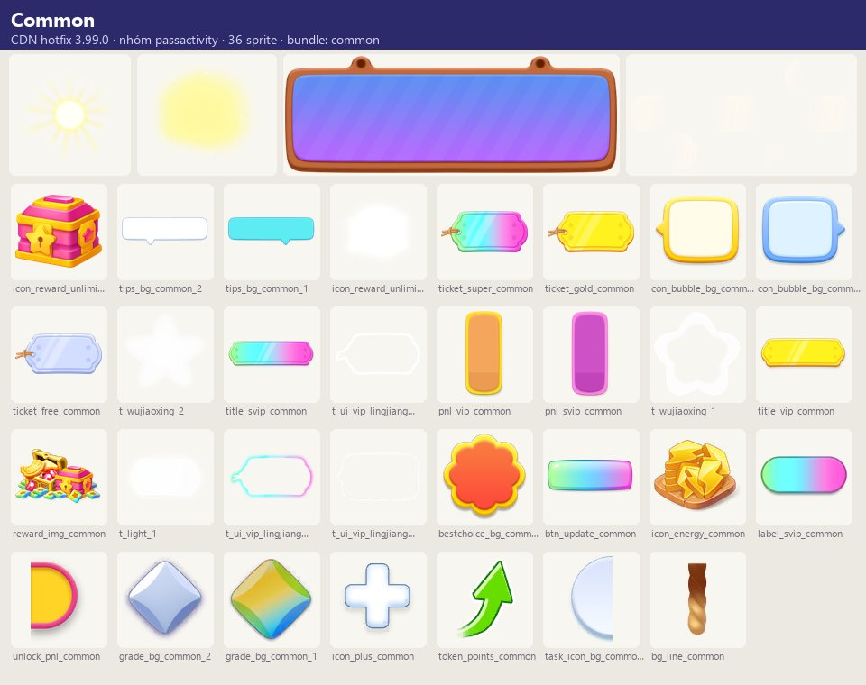
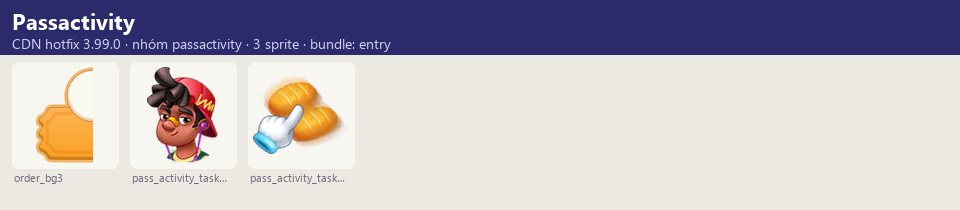
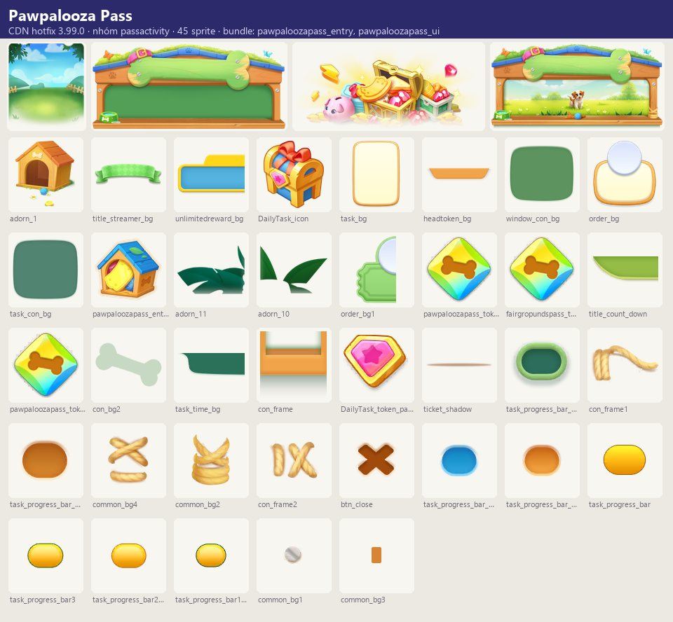
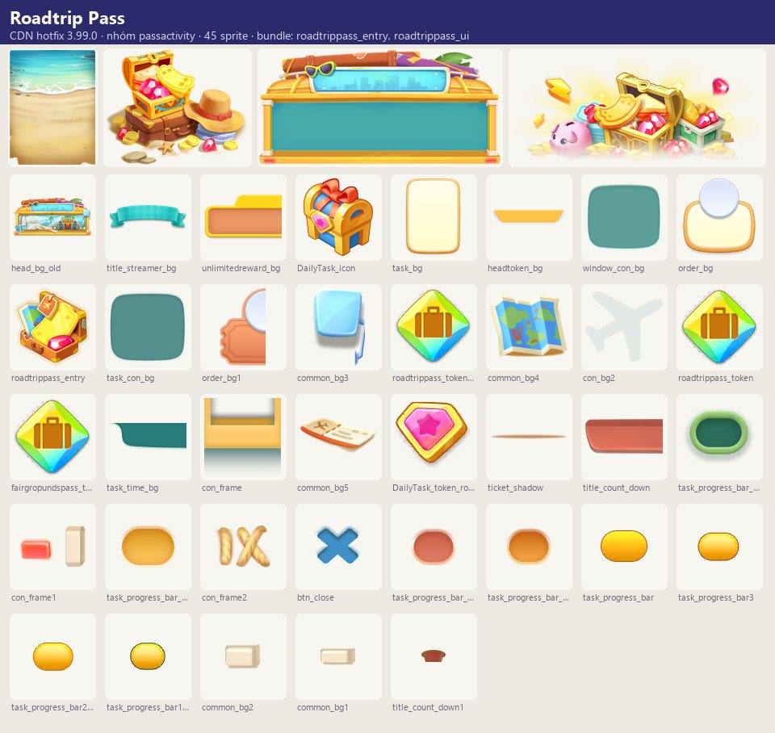
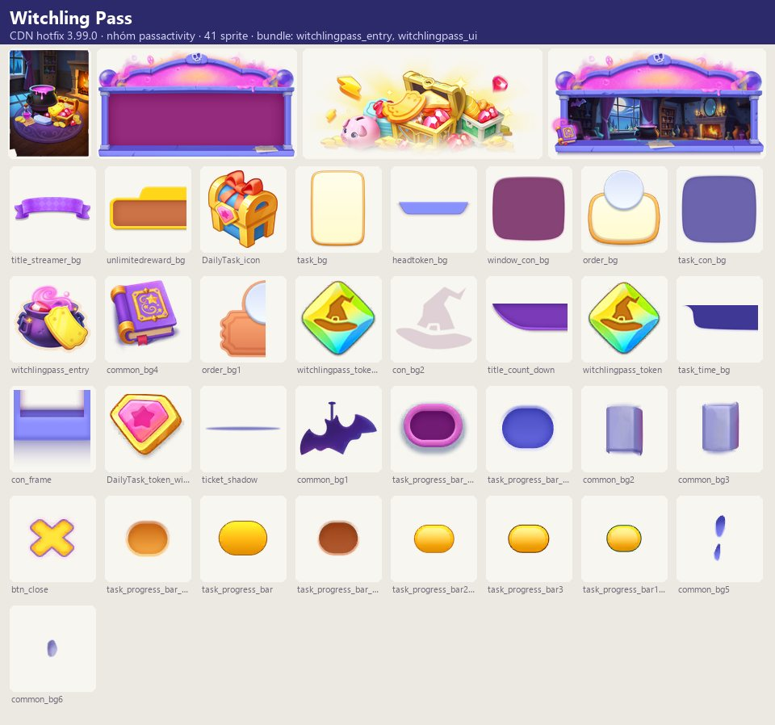

Tài nguyên hình ảnh
Season Pass theo mùa (mỗi mùa có chủ đề: Bamboo Garden/Green Pass, Floral, Mother's Day, Pirate, Pet, Surfing, Universe, Knightly, Circus, Sundae, Cottontail,…
Mô tả
- Season Pass theo mùa (mỗi mùa có chủ đề: Bamboo Garden/Green Pass, Floral, Mother's Day, Pirate, Pet, Surfing, Universe, Knightly, Circus, Sundae, Cottontail, Sweet & Tangy, Heartful, Paw Palooza, Road Trip, Witchling…).
- Người chơi làm nhiệm vụ để ghi điểm, lên cấp Pass và nhận thưởng ở từng cấp ở nhánh FREE; mua VIP Pass (tên riêng theo mùa, ví dụ Green Pass) mở nhánh thưởng VIP, và SUPER PASS ('Best value!') mở thêm thưởng vô tận + {0}% điểm.
- Nhiều mùa kèm đồ trang trí (bp_decor) và truyện mới.
- Đạt cấp cao nhất mở Bonus Bank tích coin/gem để nhận khi mùa kết thúc (yêu cầu VIP).
Còn thiếu / chưa xác minh
Mở khóa & điểm vào
Theo cấp người chơi (preview_title_pass 'Season Pass' + preview_open_level); mỗi mùa có thời hạn.
Điểm vào:
- Bong bóng mùa trên bảng (<Season>PassBoardBubble)
- PassActivityNoticeBubble / NoticeBubbleNew
- Popup mùa mới ('New Season Ready!')
Cách hoạt động
- Mùa bắt đầu → ReadyWindow + tutorial (Pass ready, ghi điểm, làm nhiệm vụ, VIP Ticket mở thêm thưởng).
- MainWindowNew hiển thị đường thưởng theo cấp với hai nhánh FREE/VIP (và SVIP).
- Nhiệm vụ có hạn trong ngày: Help {0} Customers, Merge {0} times, Merge {0} {1}, Earn {0} coins, Spend {0} gems, Expend {0} energy; hoàn thành nhận điểm (token).
- Xong nhiệm vụ trong ngày mở Bonus Mission nhiều điểm hơn; hết nhiệm vụ thì chờ làm mới ('The missions will be refreshed later on: {0}').
- Đủ điểm → lên cấp → 'Prizes Unlocked!' → Claim.
- Thưởng VIP bị khóa nếu chưa mua ('Upgrade to this level and activate the VIP Pass').
- Mua VIP qua BuyTicketWindow; khi định bỏ có hộp thoại 'Last chance!
- Are you sure you want to give up?' (Rethink / Give up).
- Đạt cấp cao nhất: Bonus Bank tích coin/gem theo nhiệm vụ, mở khi hết mùa (cần VIP).
- Hết mùa: EndWindow; thưởng chưa nhận được trả lại qua RewardRecoverWindow.
Luồng chi tiết theo code
Mùa bắt đầu → ReadyWindow + tutorial (Pass ready, ghi điểm, làm nhiệm vụ, VIP Ticket mở thêm thưởng). MainWindowNew hiển thị đường thưởng theo cấp với hai nhánh FREE/VIP (và SVIP). Nhiệm vụ có hạn trong ngày: Help {0} Customers, Merge {0} times, Merge {0} {1}, Earn {0} coins, Spend {0} gems, Expend {0} energy; hoàn thành nhận điểm (token). Xong nhiệm vụ trong ngày mở Bonus Mission nhiều điểm hơn; hết nhiệm vụ thì chờ làm mới ('The missions will be refreshed later on: {0}'). Đủ điểm → lên cấp → 'Prizes Unlocked!' → Claim. Thưởng VIP bị khóa nếu chưa mua ('Upgrade to this level and activate the VIP Pass'). Mua VIP qua BuyTicketWindow; khi định bỏ có hộp thoại 'Last chance! Are you sure you want to give up?' (Rethink / Give up). Đạt cấp cao nhất: Bonus Bank tích coin/gem theo nhiệm vụ, mở khi hết mùa (cần VIP). Hết mùa: EndWindow; thưởng chưa nhận được trả lại qua RewardRecoverWindow.
Tài nguyên hình ảnh (5)
5 bảng sprite trích từ bundle sự kiện trên CDN hotfix 3.99.0 (mỗi bảng là một chủ đề/biến thể; sprite rời, không phải màn hình đã dựng). Bấm ảnh để phóng to; nhãn UC dẫn tới use case tương ứng.










Phần thưởng
Phần thưởng theo code
| Ngữ cảnh | Phần thưởng | Evidence |
|---|---|---|
| Cấp Pass | Vật phẩm đồ trang trí truyện mới VIP/Super thêm thưởng | bp_decor_newdecoration, bp_decor_newstory |
Số liệu chính
| Chỉ số | Giá trị | Nguồn |
|---|---|---|
| Rương thưởng Pass | item_bp_chest_* (9) | Item rương Pass — game_text |
Use case (9)
Bấm vào từng use case để mở. Mở/đóng tất cả
UC-01 Bắt đầu mùa
Các bước- ReadyWindow
- Tutorial 1–5
| Actor | System |
|---|---|
| Trigger | Mùa mới mở |
| Điều kiện | Đủ level |
| Kết quả | Người chơi tham gia |
| Quy tắc / số liệu | Tên/vé theo mùa |
| Evidence | text battlepass_title_start, battlepass_tutorial_*; prefab *PassReadyWindow |
UC-02 Làm nhiệm vụ ghi điểm
Các bước- Hoàn thành nhiệm vụ (giao khách, merge, coin, gem, năng lượng)
- Nhận điểm
| Actor | Player |
|---|---|
| Trigger | Chơi bình thường |
| Điều kiện | Mùa đang chạy |
| Kết quả | Thanh cấp Pass tăng |
| Quy tắc / số liệu | Loại nhiệm vụ: cus, cyMerge, mergeItem, coin, gem, energy |
| Evidence | text battlepass_taskTitle_*; prefab *PassTokenWindow, *PassFinishTaskWindowNew |
UC-03 Bonus Mission
Các bước- Mở nhiệm vụ thưởng
- Hoàn thành nhận nhiều điểm hơn
| Actor | Player |
|---|---|
| Trigger | Xong nhiệm vụ có hạn trong ngày |
| Điều kiện | — |
| Kết quả | Điểm thêm |
| Quy tắc / số liệu | Khóa tới khi xong nhiệm vụ ngày |
| Evidence | text battlepass_newtask*, battlepass_tutorial_extraTask; prefab *PassNewTimelimitTaskWindowNew |
UC-04 Nhận thưởng cấp
Các bước- Claim thưởng FREE
- Thưởng VIP nếu đã mua
| Actor | Player |
|---|---|
| Trigger | Lên cấp Pass |
| Điều kiện | — |
| Kết quả | Vật phẩm/đồ trang trí/truyện |
| Quy tắc / số liệu | Đã nhận: battlepass_redesc_claimed; chưa đủ cấp: battlepass_redesc_locked |
| Evidence | text battlepass_collectButton, battlepass_redesc_*, bp_decor_newstory, bp_decor_newdecoration |
UC-05 Mua VIP / Super Pass
Các bước- BuyTicketWindow liệt kê lợi ích ('Purchasing VIP PASS now, you will get:')
- Mua IAP
- 'VIP Pass Unlocked!' / 'Super Pass Unlocked!'
| Actor | Player |
|---|---|
| Trigger | Bấm Unlock/Upgrade |
| Điều kiện | — |
| Kết quả | Mở nhánh VIP; Super: thưởng vô tận + {0}% điểm |
| Quy tắc / số liệu | VIP còn tăng tốc hồi năng lượng ('Energy charges faster!') |
| Evidence | text battlepass_finalPurchase*, battlepass_superTicket*, battlepass_shopDesc, battlepass_itemActivated*; prefab PassActivityTicketWindow(SVip), *PassBuyTicketWindow, PassActivityEnergyTicketArea |
UC-06 Last chance
Các bước- Hộp thoại 'Last chance!'
- Rethink / Give up
| Actor | Player |
|---|---|
| Trigger | Đóng popup mua |
| Điều kiện | — |
| Kết quả | Giữ chân mua |
| Quy tắc / số liệu | — |
| Evidence | text battlepass_lastChance, battlepass_buyButton, battlepass_noButton; prefab *PassBuyTicketPopupWindow |
UC-07 Bonus Bank
Các bước- Làm thêm nhiệm vụ → tích coin/gem vào Bonus Bank
- Hết mùa mở nhận
| Actor | Player |
|---|---|
| Trigger | Đạt cấp cao nhất |
| Điều kiện | Có VIP để mở |
| Kết quả | Thưởng lớn cuối mùa |
| Quy tắc / số liệu | Bank đầy: chờ hết mùa; chưa VIP: phải mua |
| Evidence | text battlepass_bank_* |
UC-08 Thưởng vô tận
Các bước- Tiếp tục nhận thưởng sau cấp cuối
| Actor | Player |
|---|---|
| Trigger | Vượt cấp cuối (Super Pass) |
| Điều kiện | Super Pass |
| Kết quả | Endless Rewards |
| Quy tắc / số liệu | — |
| Evidence | text battlepass_superTicket_bene_1, ultimate_reward_unlock_tip; prefab PassActivityUnlimitedRewardWindow |
UC-09 Hết mùa
Các bước- EndWindow
- Trả thưởng chưa nhận (RewardRecoverWindow)
| Actor | System |
|---|---|
| Trigger | Hết hạn |
| Điều kiện | — |
| Kết quả | Đóng mùa |
| Quy tắc / số liệu | — |
| Evidence | text battlepass_endDesc_*, battlepass_recover_reward; prefab *PassEndWindow, *PassRewardRecoverWindow |
Cấu hình (6)
Gộp mọi nguồn: const trong code, JSON mặc định trong Resources, bảng static, storage key, AB test, cờ server.
| Nguồn | Key | Kiểu | Giá trị | Ý nghĩa | Nơi định nghĩa |
|---|---|---|---|---|---|
| asset | Mùa có văn bản | list | Shopping Pass, The Bamboo Garden (Green Pass), Floral Season, Mother's Day, Pirate, Pet, Surfing, Universe, Knightly, Circus2, Sundae, Cottontail, Sweet & Tangy, Heartful (Mother2026), Paw Palooza, Road Trip, Witchling | Chủ đề mùa | game_text battlepass_*, bp_decor_* |
| asset | Prefab mùa trong APK | list | PawpaloozaPass, RoadtripPass, WitchlingPass | Các mùa hiện tại/sắp tới đóng gói sẵn | UIPrefabConfig PassActivity/* |
| asset | Loại nhiệm vụ | enum | cus, cyMerge, mergeItem, coin, gem, energy | battlepass_taskTitle_* | |
| asset | Item rương Pass | id | item_bp_chest_* (9) | Rương thưởng Pass | game_text |
| CDN hotfix 3.99.0 (catalog Addressables + bundle) | Biến thể chủ đề — nhóm passactivity | list | 3: Pawpalooza Pass, Roadtrip Pass, Witchling Pass | Skin/biến thể có bundle trên CDN; server chọn skin nào chạy | facts/runtime/decoded/cdn_themes.json |
| CDN hotfix 3.99.0 (catalog Addressables + bundle) | Bậc pass trả phí (theo sprite) | list | VIP, SVIP; có hộp thưởng vô tận (icon_reward_unlimitedbox) | Khung giao diện riêng cho VIP và SVIP | passactivity/common |
Giao diện (UI)
| Element | Class | Mục đích |
|---|---|---|
| Màn chính | PassActivity/<Season>Pass_prefab/Window/<Season>PassMainWindowNew | Đường thưởng |
| Điểm | <Season>PassTokenWindow | Nhiệm vụ & điểm |
| Mua vé | PassActivityTicketWindow, PassActivityTicketWindowSVip, <Season>PassBuyTicketWindow | VIP/Super |
| Thưởng vô tận | PassActivityUnlimitedRewardWindow |
Storage keys
activity
Chưa đọc được / ghi chú
- Số cấp mỗi mùa, điểm mỗi nhiệm vụ, thưởng từng cấp, giá VIP/Super và % điểm Super do server cấu hình
Tính năng liên quan
Nhiệm vụ ngày/tuần Cửa hàng & IAP Năng lượng Bản đồ & khu vực Khung sự kiện chung
Nguồn đã đọc
- notes/packs/BattlePass.md
- facts/runtime/cdn_png/index.json + screens/cdn_shots.json (bundle sự kiện CDN)